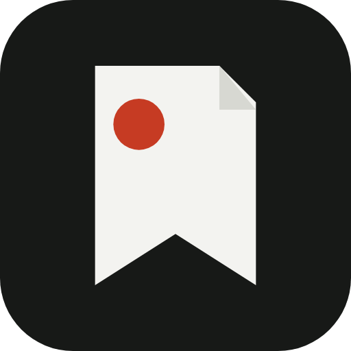

Foundkeep Mobile interaction studyScroll inside a phone. The header makes space as you browse, then brings your tools back when you reverse. Open a save to try the quieter detail view.
Compare the bars, then choose your favorite. These are interactive design previews with sample saves.